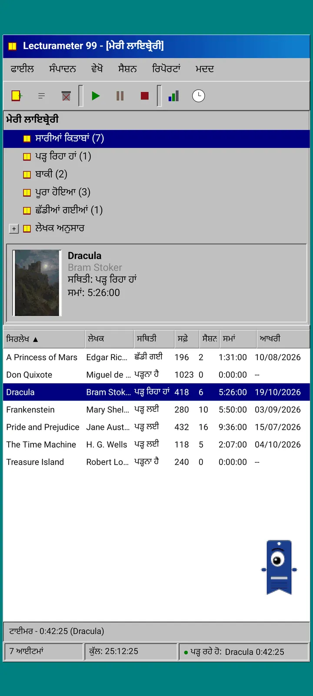
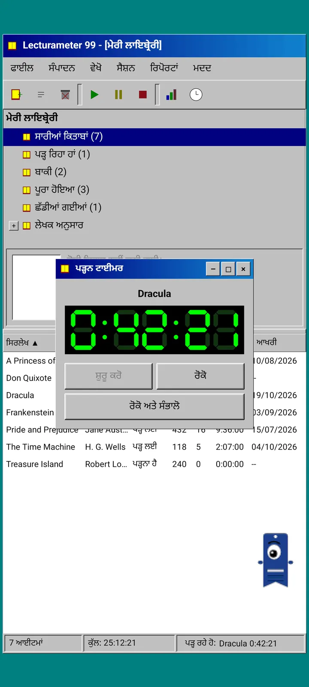
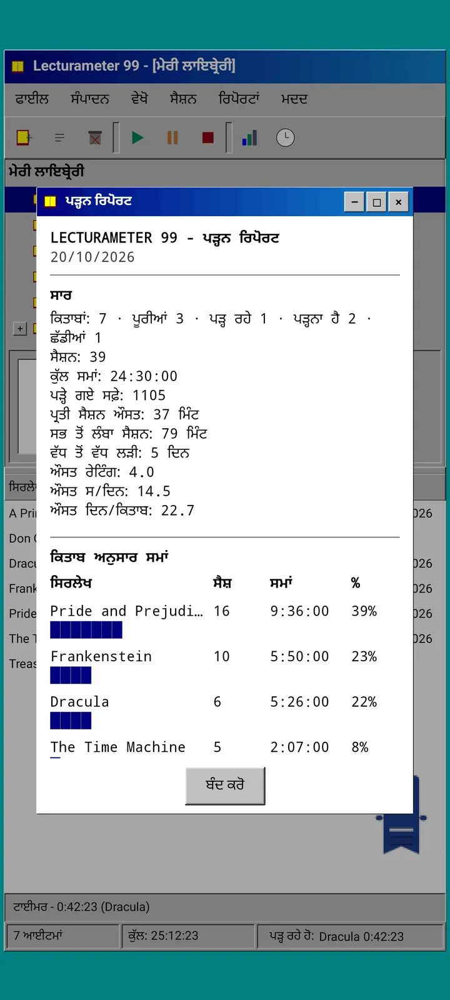
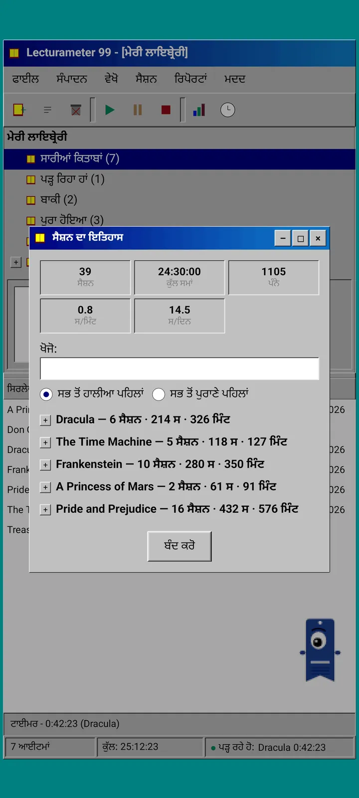
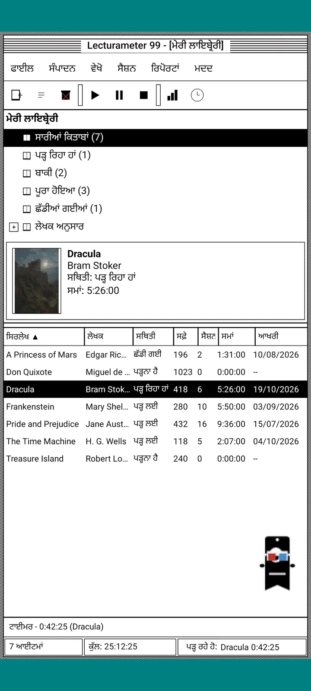
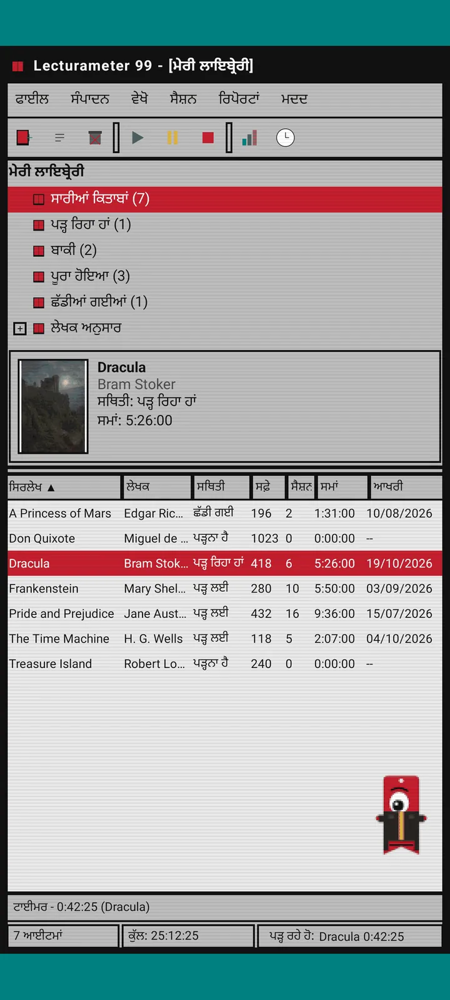
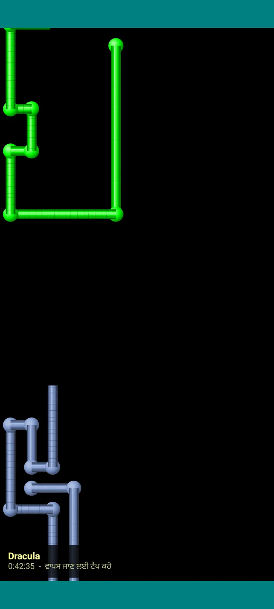

Lecturameter 1999
Lecturameter ਇਸ ਤਰ੍ਹਾਂ ਜਿਵੇਂ ਤੁਸੀਂ ਇਸਨੂੰ 1999 ਵਿੱਚ CD-ROM ਤੋਂ ਇੰਸਟਾਲ ਕੀਤਾ ਹੋਵੇ। ਐਪ ਦਾ ਇੱਕ ਵਿਕਲਪਿਕ ਕਲਾਇੰਟ, ਖਿੜਕੀਆਂ, ਮੀਨੂ ਅਤੇ ਸਾਰਣੀਆਂ ਵਾਲਾ, ਜੋ ਤੁਹਾਡੇ ਅਸਲੀ ਬੈਕਅੱਪ ਖੋਲ੍ਹਦਾ ਹੈ।

ਇਹ ਕੀ ਹੈ
ਨੱਬਿਆਂ ਦੇ ਅਖ਼ੀਰ ਦਾ ਇੱਕ ਡੈਸਕਟਾਪ ਪ੍ਰੋਗਰਾਮ, ਜੋ ਤੁਹਾਡੇ ਫ਼ੋਨ ਵਿੱਚ ਚੱਲਦਾ ਹੈ। ਹਰੇ-ਨੀਲੇ ਡੈਸਕਟਾਪ ਉੱਤੇ ਇੱਕ ਵਿੰਡੋ, ਮੀਨੂ ਬਾਰ, ਟੂਲਬਾਰ, ਫੋਲਡਰ ਟ੍ਰੀ, ਸੰਘਣੀ ਸਾਰਣੀ ਅਤੇ ਸਥਿਤੀ ਪੱਟੀ।
- ਟ੍ਰੀ ਦੇ ਰੂਪ ਵਿੱਚ ਲਾਇਬ੍ਰੇਰੀ: ਸਾਰੀਆਂ ਕਿਤਾਬਾਂ, ਪੜ੍ਹ ਰਿਹਾ ਹਾਂ, ਬਾਕੀ, ਪੂਰੀਆਂ, ਛੱਡੀਆਂ ਅਤੇ ਲੇਖਕ ਮੁਤਾਬਕ
- ਸਿਰਲੇਖ, ਲੇਖਕ, ਸਥਿਤੀ, ਪੰਨੇ, ਸੈਸ਼ਨ, ਸਮਾਂ ਅਤੇ ਆਖ਼ਰੀ ਵਾਰ ਪੜ੍ਹੀ ਵਾਲੀ ਸਾਰਣੀ। ਛਾਂਟਣ ਲਈ ਕਿਸੇ ਕਾਲਮ ਦੇ ਸਿਰਲੇਖ ਨੂੰ ਛੂਹੋ
- ਅਸਲੀ ਕਿਤਾਬ ਖੋਜ, ਉਸੇ ਕੈਟਾਲਾਗ ਨਾਲ ਜੋ Lecturameter ਵਰਤਦਾ ਹੈ
- Lecturameter ਦਾ ਬੈਕਅੱਪ ਅਤੇ Goodreads CSV ਆਯਾਤ ਤੇ ਐਕਸਪੋਰਟ ਕਰਦਾ ਹੈ। ਤੁਹਾਡਾ ਡਾਟਾ ਕੁਝ ਗੁਆਏ ਬਿਨਾਂ ਅੰਦਰ-ਬਾਹਰ ਜਾਂਦਾ ਹੈ

ਇਹ ਕਿਉਂ ਹੈ
ਇੱਕ ਤਜਰਬਾ: ਅਸਲੀ ਐਪ ਨੂੰ ਛੇੜੇ ਬਿਨਾਂ, ਬਿਲਕੁਲ ਵੱਖਰੇ ਡਿਜ਼ਾਈਨ ਆਧਾਰਾਂ ਹੇਠ Lecturameter ਦੇ ਵਿਚਾਰ ਨੂੰ ਸ਼ੁਰੂ ਤੋਂ ਦੁਬਾਰਾ ਬਣਾਉਣਾ। ਸਾਰੀਆਂ ਨਵੀਆਂ ਵਿਆਖਿਆਵਾਂ ਵਿੱਚੋਂ ਮੈਨੂੰ 1999 ਵਾਲੀ ਸਭ ਤੋਂ ਵੱਧ ਪਸੰਦ ਆਈ, ਇਸ ਲਈ ਮੈਂ ਇਸਨੂੰ ਮਜ਼ੇਦਾਰ ਅਭਿਆਸ ਵਜੋਂ ਪੂਰਾ ਕੀਤਾ ਅਤੇ ਇੱਕ ਪੂਰਾ ਕਲਾਇੰਟ ਬਣਾ ਦਿੱਤਾ। ਇਹ ਜਾਣਬੁੱਝ ਕੇ Lecturameter ਨਾਲੋਂ ਸਰਲ ਹੈ: ਇਹ ਇੱਕ ਤਜਰਬਾ ਹੈ ਅਤੇ, ਮੂਲ ਰੂਪ ਵਿੱਚ, ਇਸਦਾ ਹੋਰ ਵਿਕਾਸ ਨਹੀਂ ਹੋਵੇਗਾ।
- ਹਰੇ LCD ਡਿਸਪਲੇ ਵਾਲੀ ਤੈਰਦੀ ਵਿੰਡੋ ਵਿੱਚ ਟਾਈਮਰ। ਇਹ ਹਿਲਦੀ ਹੈ, ਟਾਸਕਬਾਰ ਵਿੱਚ ਛੋਟੀ ਹੋ ਜਾਂਦੀ ਹੈ ਅਤੇ ਸਥਿਤੀ ਪੱਟੀ ਵਿੱਚ ਗਿਣਤੀ ਜਾਰੀ ਰੱਖਦੀ ਹੈ
- ਜਦੋਂ ਤੁਸੀਂ ਰੁਕਦੇ ਹੋ, ਤਾਂ ਸੈਸ਼ਨ ਸੇਵ ਕਰਨ ਵਾਲੀ ਵਿੰਡੋ ਤੁਹਾਡੇ ਪੰਨੇ ਪੁੱਛਦੀ ਹੈ ਅਤੇ ਤੁਹਾਡੀ ਗਤੀ ਕੱਢਦੀ ਹੈ, ਬਿਲਕੁਲ Lecturameter ਵਾਂਗ
- ਸੇਵ ਕੀਤੇ ਸੈਸ਼ਨ Lecturameter ਦੇ ਸੈਸ਼ਨ ਹੀ ਹਨ: ਜੇ ਤੁਸੀਂ Lecturameter 1999 ਦਾ ਬੈਕਅੱਪ ਐਕਸਪੋਰਟ ਕਰਕੇ Lecturameter ਵਿੱਚ ਆਯਾਤ ਕਰੋ, ਤਾਂ ਉਹ ਆਧੁਨਿਕ ਐਪ ਵਿੱਚ ਵਾਪਸ ਆ ਜਾਂਦੇ ਹਨ।

ਪੜ੍ਹਨ ਦੀ ਰਿਪੋਰਟ
ਅੰਕੜੇ ਇੱਕ ਛਪੀ ਹੋਈ ਰਿਪੋਰਟ ਵਾਂਗ ਹਨ: ਸਾਰ, ਹਰ ਕਿਤਾਬ ਦਾ ਸਮਾਂ ਬਲਾਕ ਬਾਰਾਂ ਨਾਲ, ਪ੍ਰਤੀ ਦਿਨ ਪੰਨਿਆਂ ਵਿੱਚ ਗਤੀ, ਅੱਖਰਾਂ ਨਾਲ ਬਣਿਆ ਸਾਲ ਦਾ ਕੈਲੰਡਰ ਅਤੇ ਆਖ਼ਰੀ ਸੱਤ ਦਿਨ।

ਸੈਸ਼ਨਾਂ ਦਾ ਇਤਿਹਾਸ
ਸੈਸ਼ਨ ਕਿਤਾਬ ਅਨੁਸਾਰ ਪਲੱਸ ਅਤੇ ਮਨਫ਼ੀ ਵਾਲੇ ਟ੍ਰੀ ਵਿੱਚ ਵੰਡੇ ਹਨ, ਉੱਪਰ ਪੰਜ ਅੰਕੜਿਆਂ ਨਾਲ: ਸੈਸ਼ਨ, ਕੁੱਲ ਸਮਾਂ, ਪੰਨੇ, ਪ੍ਰਤੀ ਮਿੰਟ ਪੰਨੇ ਅਤੇ ਪ੍ਰਤੀ ਦਿਨ ਪੰਨੇ।

ਸੈਸ਼ਨ ਸੇਵ ਕਰੋ
ਤਾਰੀਖ਼, ਮਿੰਟ, ਪਹਿਲਾ ਅਤੇ ਆਖ਼ਰੀ ਪੰਨਾ, ਟਿੱਪਣੀ। ਤੁਹਾਡੇ ਲਿਖਦਿਆਂ ਹੀ ਸਾਰ ਪੰਨੇ ਅਤੇ ਗਤੀ ਕੱਢ ਦਿੰਦਾ ਹੈ। ਜੇ ਤੁਸੀਂ ਆਖ਼ਰੀ ਪੰਨੇ ਤੱਕ ਪਹੁੰਚ ਜਾਓ, ਤਾਂ ਇਹ ਪੁੱਛਦਾ ਹੈ ਕਿ ਕੀ ਤੁਸੀਂ ਕਿਤਾਬ ਪੂਰੀ ਕਰ ਲਈ ਹੈ।

Pagi 99
ਪਾਗੀ ਵੀ 1999 ਵਿੱਚ ਆ ਗਿਆ ਹੈ: ਪਿਕਸਲ ਵਾਲਾ, ਉਸ ਸਮੇਂ ਦੇ ਦਫ਼ਤਰੀ ਸਹਾਇਕਾਂ ਵਾਂਗ ਸਕ੍ਰੀਨ ਉੱਤੇ ਖੁੱਲ੍ਹਾ ਘੁੰਮਦਾ। ਤੁਸੀਂ ਇਸਨੂੰ ਖਿੱਚ ਸਕਦੇ ਹੋ, ਛੂਹਣ 'ਤੇ ਇਹ ਇੱਕ ਲਾਈਨ ਬੋਲਦਾ ਹੈ ਅਤੇ ਪੀਲੇ ਗੁਬਾਰਿਆਂ ਵਿੱਚ ਸੁਝਾਅ ਦਿਖਾਉਂਦਾ ਹੈ।
ਥੀਮ
ਕਲਾਸਿਕ 98 ਮੁਫ਼ਤ ਹੈ ਅਤੇ ਮੂਲ ਥੀਮ ਹੈ। ਪੈਕ ਹੋਰ ਛੇ ਜੋੜਦਾ ਹੈ, ਹਰੇਕ ਦਾ ਆਪਣਾ ਬੈਕਗ੍ਰਾਊਂਡ ਅਤੇ ਆਪਣੀਆਂ ਆਵਾਜ਼ਾਂ ਹਨ।

ਇਸਨੂੰ ਦ੍ਰਿਸ਼ ਮੀਨੂ ਵਿੱਚੋਂ ਚੁਣੋ
ਦ੍ਰਿਸ਼, ਥੀਮ... ਸੱਤ ਥੀਮਾਂ ਵਾਲੀ ਇੱਕ ਵਿੰਡੋ ਖੋਲ੍ਹਦਾ ਹੈ। ਬਦਲਾਅ ਇੱਕੋ ਵੇਲੇ ਸਾਰੀਆਂ ਵਿੰਡੋਆਂ, ਟਾਈਮਰ ਅਤੇ ਪਾਗੀ ਤੱਕ ਪਹੁੰਚ ਜਾਂਦਾ ਹੈ।
- ਕਲਾਸਿਕ 98, ਮੁਫ਼ਤ ਅਤੇ ਮੂਲ: ਸਲੇਟੀ ਵਿੰਡੋਆਂ, ਗੂੜ੍ਹੀਆਂ ਨੀਲੀਆਂ ਸਿਰਲੇਖ ਪੱਟੀਆਂ ਅਤੇ ਹਰਾ-ਨੀਲਾ ਡੈਸਕਟਾਪ
- ਥੀਮ ਪੈਕ: 1984, ਗਮਡ੍ਰੌਪ, ਮੈਮੋਰੀ, ਟਾਵਰਜ਼, ਕੋਰ ਅਤੇ 8-ਬਿੱਟ
- ਹਰ ਥੀਮ ਆਪਣਾ ਡੈਸਕਟਾਪ ਬੈਕਗ੍ਰਾਊਂਡ ਅਤੇ ਛੋਹਾਂ, ਵਿੰਡੋਆਂ ਤੇ ਟਾਈਮਰ ਲਈ ਆਪਣੀਆਂ ਆਵਾਜ਼ਾਂ ਲੈ ਕੇ ਆਉਂਦਾ ਹੈ
- ਜੇ ਤੁਸੀਂ ਚੁੱਪ-ਚਾਪ ਪੜ੍ਹਦੇ ਹੋ, ਤਾਂ ਦ੍ਰਿਸ਼, ਥੀਮ ਦੀਆਂ ਆਵਾਜ਼ਾਂ ਉਨ੍ਹਾਂ ਨੂੰ ਬੰਦ ਕਰ ਦਿੰਦਾ ਹੈ

ਕਲਾਸਿਕ 98
ਸਲੇਟੀ ਵਿੰਡੋਆਂ, ਗੂੜ੍ਹੀਆਂ ਨੀਲੀਆਂ ਸਿਰਲੇਖ ਪੱਟੀਆਂ ਅਤੇ ਹਰਾ-ਨੀਲਾ ਡੈਸਕਟਾਪ। ਮੁਫ਼ਤ, ਐਪ ਇਸੇ ਨਾਲ ਖੁੱਲ੍ਹਦੀ ਹੈ।

1984
ਇੱਕ-ਬਿੱਟ ਕਾਲਾ-ਚਿੱਟਾ ਡੈਸਕਟਾਪ, ਬਿੰਦੀਆਂ ਦੇ ਨਮੂਨਿਆਂ ਅਤੇ ਚੌਰਸ ਵਿੰਡੋਆਂ ਨਾਲ।

ਗਮਡ੍ਰੌਪ
ਪਾਰਦਰਸ਼ੀ ਰੰਗੀਨ ਪਲਾਸਟਿਕ, ਗੋਲ ਬਟਨ ਅਤੇ ਬੈਕਗ੍ਰਾਊਂਡ ਵਿੱਚ ਧਾਰੀਆਂ।

ਮੈਮੋਰੀ
ਨੱਬਿਆਂ ਦੇ ਡਿਸਕ ਵਾਲੇ ਕੰਸੋਲ ਦੇ ਮੀਨੂ, ਗੂੜ੍ਹੇ ਨੀਲੇ ਰੰਗਾਂ ਵਿੱਚ।

ਟਾਵਰਜ਼
ਨੱਬਿਆਂ ਦਾ ਇੱਕ ਹੋਰ ਡਿਸਕ ਵਾਲਾ ਕੰਸੋਲ, ਰਾਤ ਦਾ ਨੀਲਾ ਰੰਗ ਅਤੇ ਹਲਕੀਆਂ ਨੀਲੀਆਂ ਲਕੀਰਾਂ।

ਕੋਰ
ਕਾਲਾ ਅਤੇ ਹਰਾ ਕੰਸੋਲ, ਜਿਵੇਂ ਕਦੇ ਬੰਦ ਨਾ ਹੋਣ ਵਾਲੀ ਸਕ੍ਰੀਨ।

8-ਬਿੱਟ
ਮੋਟੇ ਪਿਕਸਲ, ਥੋੜ੍ਹੇ ਰੰਗ ਅਤੇ ਬਲਾਕਾਂ ਵਰਗੇ ਅੱਖਰ।

ਖਰੀਦਣ ਤੋਂ ਪਹਿਲਾਂ ਅਜ਼ਮਾਓ
ਕਿਸੇ ਬੰਦ ਥੀਮ ਨੂੰ ਛੂਹੋ ਅਤੇ ਪੂਰੀ ਐਪ ਉਸੇ ਵਿੱਚ ਬਦਲ ਜਾਂਦੀ ਹੈ। ਜੇ ਤੁਸੀਂ ਬਿਨਾਂ ਖਰੀਦੇ ਬੰਦ ਕਰ ਦਿਓ, ਤਾਂ ਪਿਛਲਾ ਥੀਮ ਵਾਪਸ ਆ ਜਾਂਦਾ ਹੈ।
ਸਕ੍ਰੀਨਸੇਵਰ
ਇਹ ਸਿਰਫ਼ ਉਦੋਂ ਦਿਸਦੇ ਹਨ ਜਦੋਂ ਟਾਈਮਰ ਚੱਲ ਰਿਹਾ ਹੋਵੇ ਅਤੇ ਤੁਸੀਂ ਫ਼ੋਨ ਨੂੰ ਹੱਥ ਨਾ ਲਾਓ। ਇਹ 1, 3 ਜਾਂ 5 ਮਿੰਟ ਉਡੀਕਦੇ ਹਨ, ਜਾਂ ਕਦੇ ਨਹੀਂ। ਇੱਕ ਛੋਹ ਤੁਹਾਨੂੰ ਵਾਪਸ ਲੈ ਜਾਂਦੀ ਹੈ ਅਤੇ ਟਾਈਮਰ ਗਿਣਤੀ ਜਾਰੀ ਰੱਖਦਾ ਹੈ।

ਉੱਡਦੀਆਂ ਕਿਤਾਬਾਂ
ਪਿਕਸਲ ਵਾਲੀਆਂ ਕਿਤਾਬਾਂ ਆਪਣੇ ਕਵਰ ਫੜਫੜਾਉਂਦੀਆਂ ਕਾਲੀ ਸਕ੍ਰੀਨ ਉੱਤੇ ਉੱਡਦੀਆਂ ਹਨ।

ਅੱਖਰਾਂ ਦਾ ਖੇਤ
ਕਈ ਵਰਣਮਾਲਾਵਾਂ ਦੇ ਅੱਖਰ ਤਾਰਿਆਂ ਦੇ ਖੇਤ ਵਾਂਗ ਲੰਘਦੇ ਜਾਂਦੇ ਹਨ।

ਪੰਨਿਆਂ ਦੀਆਂ ਪਾਈਪਾਂ
ਪੰਨਿਆਂ ਦੀਆਂ ਬਣੀਆਂ ਪਾਈਪਾਂ ਜੋ ਆਪਣੇ ਆਪ ਬਣਦੀਆਂ ਜਾਂਦੀਆਂ ਹਨ ਜਦੋਂ ਤੱਕ ਸਕ੍ਰੀਨ ਭਰ ਨਹੀਂ ਜਾਂਦੀ।

ਟੱਪਦਾ ਪਾਗੀ
ਪਾਗੀ ਸਕ੍ਰੀਨ ਦੇ ਕਿਨਾਰਿਆਂ ਤੋਂ ਟਕਰਾ ਕੇ ਮੁੜਦਾ ਹੈ।

ਪੜ੍ਹਨ ਵਾਲੀ ਘੜੀ
ਸੈਸ਼ਨ ਦਾ ਸਮਾਂ ਵੱਡੇ LCD ਅੰਕਾਂ ਵਿੱਚ।

ਪਾਗੀ ਲਈ ਪੋਸ਼ਾਕਾਂ
ਪਾਗੀ 99 ਲਈ ਅੱਠ ਪੋਸ਼ਾਕਾਂ। ਤੁਸੀਂ ਇਨ੍ਹਾਂ ਨੂੰ ਦ੍ਰਿਸ਼, ਪਾਗੀ ਦੀ ਪੋਸ਼ਾਕ... ਵਿੱਚ ਚੁਣਦੇ ਹੋ, ਅਤੇ ਖਰੀਦਣ ਤੋਂ ਪਹਿਲਾਂ ਪਾ ਕੇ ਵੇਖ ਸਕਦੇ ਹੋ।
- ਕੈਸੇਟ ਪਲੇਅਰ
- ਪੁੱਠੀ ਟੋਪੀ
- 3D ਐਨਕਾਂ
- ਨਿਓਨ ਧੁੱਪ ਵਾਲੀਆਂ ਐਨਕਾਂ
- ਹੱਥ ਵਿੱਚ ਫ਼ਲਾਪੀ ਡਿਸਕ
- ਚਮੜੇ ਦੀ ਜੈਕਟ
- ਜੇਬ ਵਾਲਾ ਪਾਲਤੂ
- ਗੱਤੇ ਦਾ ਤਾਜ
ਸਟੋਰ
ਐਪ ਮੁਫ਼ਤ ਹੈ ਅਤੇ ਤੁਹਾਡੀ ਪੜ੍ਹਾਈ ਦਰਜ ਕਰਨ ਲਈ ਪੂਰੀ ਹੈ। ਜੋ ਤੁਸੀਂ ਖਰੀਦ ਸਕਦੇ ਹੋ ਉਹ ਸਿਰਫ਼ ਇਸਦੀ ਦਿੱਖ ਬਦਲਦਾ ਹੈ।
ਪੂਰੀ ਐਪ, ਬਿਨਾਂ ਕਿਸੇ ਸਮਾਂ ਸੀਮਾ ਦੇ।
- ਲਾਇਬ੍ਰੇਰੀ, ਖੋਜ, ਟਾਈਮਰ ਅਤੇ ਸੈਸ਼ਨ
- ਪੜ੍ਹਨ ਦੀ ਰਿਪੋਰਟ ਅਤੇ ਸੈਸ਼ਨਾਂ ਦਾ ਇਤਿਹਾਸ
- Lecturameter ਬੈਕਅੱਪ ਅਤੇ Goodreads CSV, ਅੰਦਰ ਅਤੇ ਬਾਹਰ
- ਕਲਾਸਿਕ 98 ਥੀਮ ਅਤੇ ਪਾਗੀ 99
- ਨਾ ਖਾਤਾ, ਨਾ ਇਸ਼ਤਿਹਾਰ
ਇੱਕ ਵਾਰ ਦੀਆਂ ਅਦਾਇਗੀਆਂ, ਕੋਈ ਸਬਸਕ੍ਰਿਪਸ਼ਨ ਨਹੀਂ।
- ਥੀਮ ਪੈਕ, €3.49: ਬੈਕਗ੍ਰਾਊਂਡ ਅਤੇ ਆਵਾਜ਼ਾਂ ਵਾਲੇ 6 ਥੀਮ, ਨਾਲ ਸਕ੍ਰੀਨਸੇਵਰ
- ਸਕ੍ਰੀਨਸੇਵਰ, €1.99: 5 ਸਕ੍ਰੀਨਸੇਵਰ
- ਪਾਗੀ ਦੀਆਂ ਪੋਸ਼ਾਕਾਂ, €1.99: 8 ਪੋਸ਼ਾਕਾਂ
- ਪੂਰਾ 1999, €4.49: ਥੀਮ, ਸਕ੍ਰੀਨਸੇਵਰ ਅਤੇ ਪੋਸ਼ਾਕਾਂ
ਮਦਦ ਮੀਨੂ ਵਿੱਚ ਵਿਕਲਪਿਕ ਬਖਸ਼ਿਸ਼ (ਟਿਪ), ਜੇ ਤੁਸੀਂ ਮੈਨੂੰ ਇੱਕ ਕੌਫ਼ੀ ਪਿਲਾਉਣਾ ਚਾਹੋ।
ਥੀਮ ਅਤੇ ਪੋਸ਼ਾਕਾਂ ਨੂੰ ਖਰੀਦਣ ਤੋਂ ਪਹਿਲਾਂ ਲਾਈਵ ਅਜ਼ਮਾਇਆ ਜਾ ਸਕਦਾ ਹੈ। ਜੇ ਤੁਸੀਂ ਬਿਨਾਂ ਖਰੀਦੇ ਬੰਦ ਕਰ ਦਿਓ, ਤਾਂ ਜੋ ਤੁਹਾਡੇ ਕੋਲ ਸੀ ਉਹ ਵਾਪਸ ਆ ਜਾਂਦਾ ਹੈ।
Lecturameter ਦੇ ਮੁਕਾਬਲੇ ਕੀ ਬਦਲਦਾ ਹੈ
Lecturameter ਵਾਂਗ ਹੀ
- ਇਕੋ ਜਿਹਾ ਡਾਟਾ: ਕਿਤਾਬਾਂ, ਸੈਸ਼ਨ, ਸਥਿਤੀਆਂ, ਰੇਟਿੰਗਾਂ ਅਤੇ ਨੋਟਸ। ਬੈਕਅੱਪ ਫ਼ਾਈਲ ਦੋਵਾਂ ਐਪਾਂ ਵਿੱਚ ਇੱਕੋ ਹੈ।
- ਸਿਰਲੇਖ ਜਾਂ ਲੇਖਕ ਨਾਲ ਕਿਤਾਬ ਖੋਜ।
- ਅਸਲੀ ਟਾਈਮਰ: ਇਹ ਬੈਕਗ੍ਰਾਊਂਡ ਵਿੱਚ ਅਤੇ ਐਪ ਬੰਦ ਕਰਨ 'ਤੇ ਵੀ ਗਿਣਤੀ ਜਾਰੀ ਰੱਖਦਾ ਹੈ।
- ਨਾ ਖਾਤਾ, ਨਾ ਇਸ਼ਤਿਹਾਰ, ਕਿਤਾਬਾਂ ਖੋਜਣ ਤੋਂ ਇਲਾਵਾ ਕੋਈ ਕਨੈਕਸ਼ਨ ਨਹੀਂ।
- Lecturameter ਵਾਲੀਆਂ ਹੀ ਭਾਸ਼ਾਵਾਂ।
ਸਿਰਫ਼ 1999 ਵਾਲੇ ਐਡੀਸ਼ਨ ਵਿੱਚ
- 1999 ਦਾ ਡੈਸਕਟਾਪ ਇੰਟਰਫੇਸ। Material ਨਹੀਂ।
- ਅਸਲੀ ਵਿੰਡੋਆਂ: ਤੁਸੀਂ ਇਨ੍ਹਾਂ ਨੂੰ ਖਿੱਚਦੇ ਹੋ, ਛੋਟਾ ਕਰਦੇ ਹੋ ਅਤੇ ਕਰਾਸ ਨਾਲ ਬੰਦ ਕਰਦੇ ਹੋ।
- ਲਿਖਤ ਵਿੱਚ ਪੜ੍ਹਨ ਦੀ ਰਿਪੋਰਟ, ਅੱਖਰਾਂ ਨਾਲ ਬਣੇ ਕੈਲੰਡਰ ਸਮੇਤ।
- ਲੰਮੇ ਦਬਾਅ 'ਤੇ ਸੰਦਰਭ ਮੀਨੂ ਅਤੇ, ਜੇ ਤੁਸੀਂ ਕੀਬੋਰਡ ਜੋੜੋ, ਕੀਬੋਰਡ ਸ਼ਾਰਟਕੱਟ।
- ਸੁਝਾਅ ਗੁਬਾਰਿਆਂ ਵਾਲਾ ਪਿਕਸਲ ਵਾਲਾ ਪਾਗੀ 99।
- ਆਪਣੇ ਬੈਕਗ੍ਰਾਊਂਡ ਅਤੇ ਆਵਾਜ਼ਾਂ ਵਾਲੇ ਵਿਕਲਪਿਕ ਥੀਮ, ਟਾਈਮਰ ਚੱਲਦਿਆਂ ਸਕ੍ਰੀਨਸੇਵਰ ਅਤੇ ਪਾਗੀ ਲਈ ਪੋਸ਼ਾਕਾਂ।
ਜੋ ਇਹ ਜਾਣਬੁੱਝ ਕੇ ਛੱਡ ਦਿੰਦਾ ਹੈ
- ਨਾ Pro, ਨਾ ਸਬਸਕ੍ਰਿਪਸ਼ਨ। ਪੜ੍ਹਾਈ ਦਰਜ ਕਰਨਾ ਸਭ ਮੁਫ਼ਤ ਹੈ, ਸਟੋਰ ਸਿਰਫ਼ ਦਿੱਖ ਵੇਚਦਾ ਹੈ।
- ਨਾ ਚੁਣੌਤੀਆਂ, ਨਾ Bingo, ਨਾ ਸਾਲਾਨਾ Wrapped, ਨਾ ਵਿਜੇਟ।
- ਨਾ ਡੁੱਬ ਕੇ ਪੜ੍ਹਨ ਵਾਲਾ ਸੈਸ਼ਨ, ਨਾ ਮਾਹੌਲ ਦੀਆਂ ਆਵਾਜ਼ਾਂ, ਨਾ Google Drive ਬੈਕਅੱਪ। ਬੈਕਅੱਪ ਇੱਕ ਫ਼ਾਈਲ ਵਜੋਂ ਸੇਵ ਹੁੰਦਾ ਹੈ।
ਬੰਦ ਟੈਸਟ
Lecturameter 1999 Google Play ਉੱਤੇ ਬੰਦ ਟੈਸਟਿੰਗ ਵਿੱਚ ਹੈ। iOS ਬਾਅਦ ਵਿੱਚ ਆਵੇਗਾ, ਅਜੇ ਕੋਈ ਤਾਰੀਖ਼ ਨਹੀਂ।
- ਗਰੁੱਪ ਵਿੱਚ ਸ਼ਾਮਲ ਹੋਵੋ groups.google.com/g/lecturameter-1999
- ਟੈਸਟਰ ਵਜੋਂ ਇੱਥੇ ਸਾਈਨ ਅੱਪ ਕਰੋ play.google.com/apps/testing/com.lecturameter.r1999
- ਇਸਨੂੰ ਇੱਥੋਂ ਇੰਸਟਾਲ ਕਰੋ Google Play
Google Play ਉੱਤੇ ਬੰਦ ਟੈਸਟਿੰਗ ਵਿੱਚ, iOS ਬਾਅਦ ਵਿੱਚ। ਬਲੌਗ ਪੋਸਟ ਪੜ੍ਹੋ ਇਹ ਵੇਖਣ ਲਈ ਕਿ ਇਹ ਕਿੱਥੋਂ ਆਇਆ ਹੈ ਅਤੇ ਕੀ ਉਮੀਦ ਰੱਖਣੀ ਹੈ।